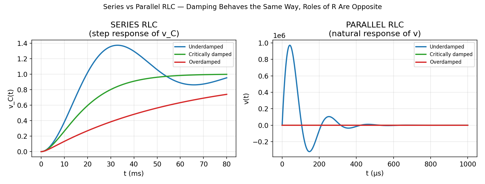
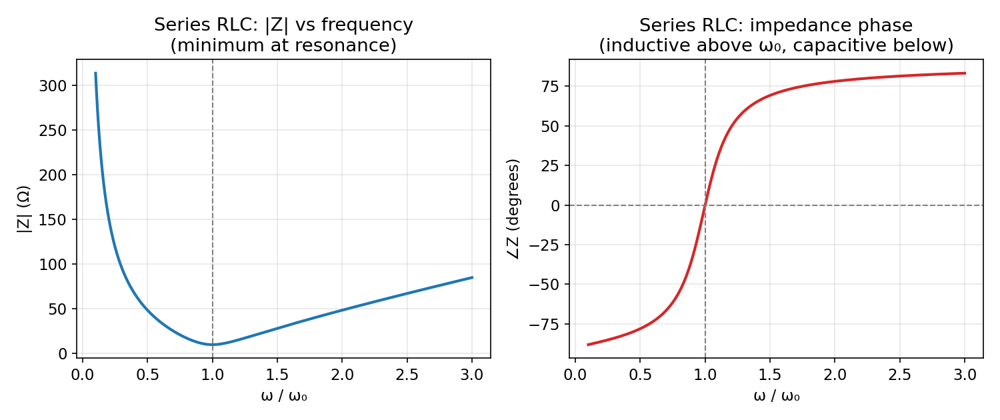
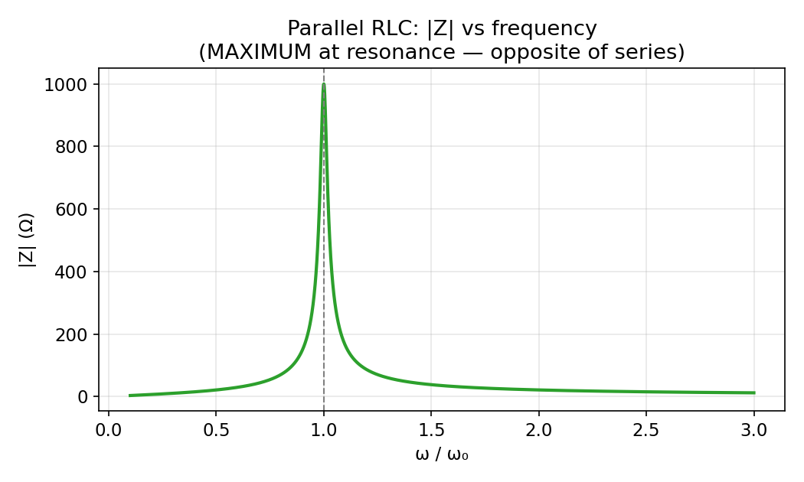

Basic Electrical Engineering · RLC Circuits and Resonance · 2 min read
Series vs Parallel RLC — Key Distinctions
← up: RLC Circuits — Responses · builds on: Impedance and Series-Parallel AC Circuits
The duality table
| Quantity | Series RLC | Parallel RLC |
|---|---|---|
| Shared variable | current (same through all three) | voltage (same across all three) |
| Impedance combination | ||
| (same!) | ||
| Damping coefficient | ||
| Effect of large | more damping (overdamped) | less damping (underdamped) |
| at resonance | minimum () | maximum () |
| Current at resonance | maximum | minimum |
| Bandwidth ∝ | (larger → wider bandwidth) | (larger → narrower bandwidth) |
Every row follows from one fact: series and parallel RLC are dual circuits — swap , , voltage$\leftrightarrow$current throughout, and every series-RLC formula becomes the corresponding parallel-RLC formula. This is why is identical in both (it's built from and only, which swap into each other under duality and so the formula is self-dual), while every formula involving flips.
The graph

Same qualitative shapes (underdamped rings, critical is fastest clean settle, overdamped crawls) — but notice the legend: for series RLC, underdamped is the small- case; for parallel RLC, underdamped is the large- case. The shape of damping is universal (see The Universal Second-Order Linear System); which physical produces which shape is exactly reversed.
Impedance vs frequency: opposite resonance behavior


Series RLC presents minimum impedance at resonance (reactances cancel, leaving only ) — so current is maximum at : a series RLC circuit is naturally a band-pass filter for current / acceptor circuit, used when you want to pass a narrow band of frequencies through to a load.
Parallel RLC presents maximum impedance at resonance (the inductive and capacitive branch currents cancel in the tank, leaving minimal current drawn from the source even though internal circulating current between and is large) — a parallel RLC circuit is naturally a band-stop/tank circuit, the basis of the tank circuits used in oscillators and radio-frequency tuning to reject all but a narrow band.
Practical identification rule
Matches exactly the "do these elements share force or displacement?" rule already established for mechanical springs in Two Dissimilar Plates in a Rigid Opening — series circuit elements are the electrical analogue of springs sharing the same force (stress), parallel circuit elements are the analogue of springs sharing the same displacement (strain).